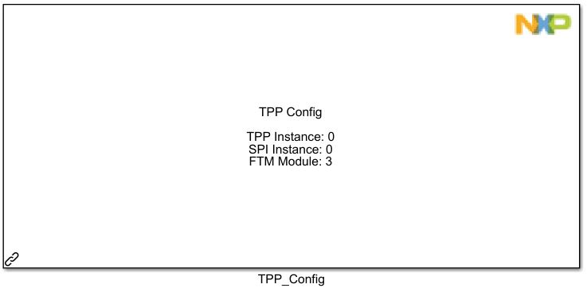
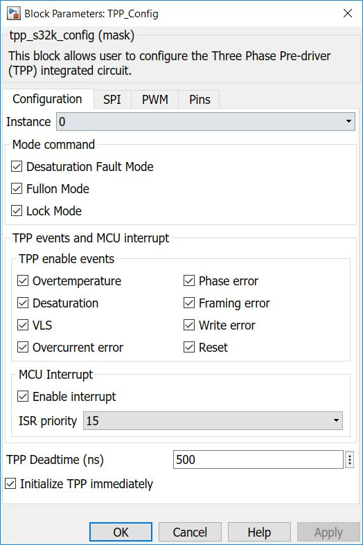
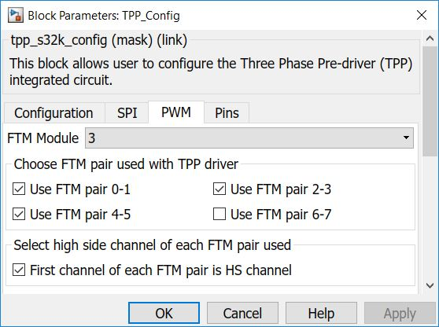
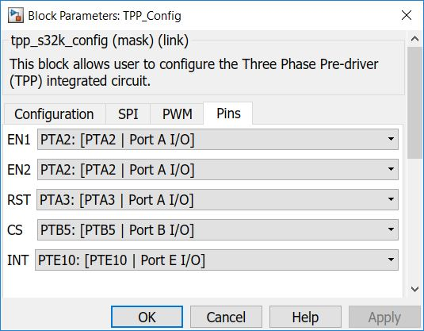

TPP Configuration Block
This block is used to configure the parameters of the TPP.
Note: Supported Three-Phase Brushless Motor Pre-Drivers are MC33GD3000, MC34GD3000, MC33937 and MC34937.
Block Image
Inputs:
- None
Outputs:
- None
Parameters and Dialog Box
The block dialog consists of the following tabs:
Configuration
The Configuration tab contains the following parameters:
Instance
Selects the TPP instance to be used.
Note:Currently limited to only 1 instace (#0).
Mode command
Selects the TPP mode.
- Desaturation Fault Mode
- Fullon Mode
- Lock Mode
If DESATURATION mode is disabled (the corresponding bit is cleared), then at a desaturation event, or if a phase error event is detected on any channel, all channels turn off and generates an Interrupt, if interrupts are enabled.
If DESATURATION mode is enabled (the corresponding bit is set), then at a desaturation event/phase error channel shutdown is disabled, but interrupts are still possible if unmasked.
If FULLON mode is enabled, then programmed deadtime control is disabled, making it is possible to have both high and Low-side drivers in a phase on simultaneously. This could be useful in special applications such as alternator regulators, or switched-reluctance motor drive applications. There is no deadtime control in fullon mode. Input signals directly control the output stages, synchronized with the internal clock
If LOCK mode is enabled, then this mode can only be cleared with a device reset. Since the mode lock mode can only be set, this bit prevents any subsequent, and likely erroneous, mode, deadtime, or mask register changes from being received. If an attempt is made to write to a register when mode lock is enabled, a write error fault is generated.
TPP enable events
Enable/disable the following events:
- Overtemperature
- Desaturation
- VLS
- Overcurrent error
- Phase error
- Framing error
- Write error
- Reset
Note:When a certain event is disabled, only the interrupt is masked; the protection mechanism still works as expected.
MCU interrupt
Enable/disable the MCU interrupt for the events mentioned above (TPP enabled events).
ISR priority - sets the priority of the MCU interrupt (if enabled).
TPP Deadtime
Sets the deadtime (in ns) of the output signals (if Fullon mode is disabled).
Initialize TPP immediately
- If enabled, the TPP will initialize immediately, once with all the other initializations (other blocks).
- If disalbed, the TPP will need to be initialized at a user-defined time, using the TPP Functional mode block.
SPI
The Configuration tab contains the following parameters:
SPI Instance
Select which SPI instance to use (click on Config SPI for TPP to open the SPI configuration block).
Note: By pressing this button, the selected SPI config block will be configured to next parameters:
- Role: Master
- Baud Rate: 2000000. But it can be manualy modified up to 4000000 bps
- CPHA: 1
- CPOL: 0
- Bit order: MSB first
- Frame size: 8
- Continous transfer: disabled

PWM
The Configuration tab contains the following parameters:
FTM Module
Select which FTM instance to use.
FTM pairs
Enable the pairs to be used.
High side
Enable if the first channel of the pair is high side (HS); disable otherwise (if first channel is low side (LS)).
Pins
The Configuration tab contains the following parameters:
EN1
Select the TPP Enable 1 pin.
EN2
Select the TPP Enable 2 pin.
Note:Those two Enable pins can share the same GPIO pin.
RST
Select the TPP Reset pin.
CS
Select the TPP Chip Select pin.
INT
Select the TPP Interrupt pin.
Block Dependency
- Configure the Target Configuration block.
- Configure the LPSPI Configuration block.
- Configure the FTM Configuration block.
Block Miscellaneous Details
* Read Hardware Manual documentation to get more information (GD3000).